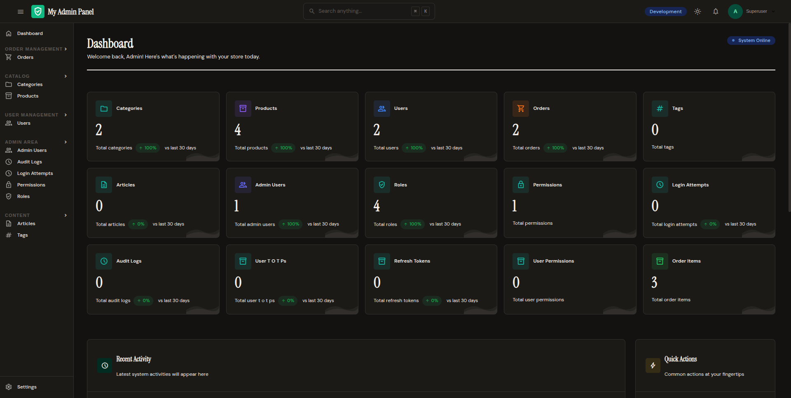

Features
Everything FastAPI Admin Kit offers, in one place.

Core
| Feature |
Description |
Link |
| Zero-Config Auto-Discovery |
Register a model, get full CRUD UI automatically |
Model Registration |
| SQLAlchemy & SQLModel |
Works with both ORMs out of the box |
Quick Start |
| Async-First |
Built for async FastAPI with AsyncSession support |
Quick Start |
| Database Support |
PostgreSQL, MySQL, and SQLite with auto URL normalization |
Configuration |
| Auto-Migration |
Automatically adds missing columns to existing tables |
CLI Tools |
| Plugin System |
Extend every layer (widgets, auth, routes, audit, storage) via plugins |
Plugins |
Authentication & Security
| Feature |
Description |
Link |
| Built-in Auth |
Session-based authentication with login page at /admin/login/ |
Auth & RBAC |
| Custom Auth Backend |
Bring your own user model and authentication logic |
Auth & RBAC |
| RBAC |
Role-based access control with per-model permissions (view, create, edit, delete) |
Auth & RBAC |
| Direct User Permissions |
Per-user permission overrides, OR'd with role permissions |
Auth & RBAC |
| Field-Level Permissions |
Restrict access to specific fields per role |
Auth & RBAC |
| Superuser Bypass |
is_superuser=True bypasses all permission checks |
Auth & RBAC |
| TOTP Two-Factor Auth |
QR code setup, enable/disable, backup codes via /admin/profile/2fa |
Auth & RBAC |
| CSRF Protection |
Signed CSRF tokens on all state-changing requests |
Auth & RBAC |
| Rate Limiting |
Sliding-window rate limiter on authentication endpoints |
Auth & RBAC |
| Password Hashing |
bcrypt with configurable rounds |
Auth & RBAC |
| Session Security |
Signed cookies with SameSite=Strict, Secure, and configurable TTL |
Configuration |
| Secret Key Validation |
Enforces minimum 32-character secret key at startup |
Configuration |
| SQL Injection Prevention |
Identifier validation on all raw SQL in CLI and auto-migrate |
Security |
User Management
| Feature |
Description |
Link |
| Default Roles |
SuperAdmin, Admin, Editor, Viewer seeded automatically |
Auth & RBAC |
| Custom Seed Roles |
Define your own roles and permissions at startup |
Configuration |
| Permission Matrix UI |
Visual checkbox grid for managing role permissions |
Auth & RBAC |
| User Management UI |
Create, edit, list, and delete admin users from the panel |
CLI Tools |
| Profile Page |
Users can view and edit their own profile at /admin/profile |
Auth & RBAC |
| Password Change |
Users can change their own password from the profile page |
Auth & RBAC |
UI & Design
| Feature |
Description |
Link |
| Modern UI |
Tailwind CSS, HTMX, and Alpine.js for a fast, responsive experience |
Themes & UI |
| Dark Mode |
Toggle between light and dark mode, configurable default |
Themes & UI |
| Theme Presets |
editorial, modern, midnight, paper, forest, minimal |
Themes & UI |
| Theme Settings Page |
Visual theme builder at /admin/settings/theme |
Themes & UI |
| Custom Themes |
Override primary colors, CSS variables, and layout settings |
Themes & UI |
| Responsive Design |
Mobile-friendly with collapsible sidebar |
Themes & UI |
| Shell Layout |
Topbar, sidebar, content area with loading bar |
Themes & UI |
| Sidebar Customization |
Position (left/right), style, collapse, nav groups |
Navigation |
| Table Styling |
Row height (compact/normal/relaxed), custom styles |
Themes & UI |
| Form Layout |
Single-column or two-column, configurable spacing |
Themes & UI |
| Content Width |
Narrow, default, or wide layout |
Themes & UI |
| Environment Badge |
Show "Production", "Staging", etc. with color coding |
Themes & UI |
| Flash Messages |
Success/error messages after operations via signed session cookie |
Themes & UI |
| Custom CSS/JS |
Inject inline or external CSS and JavaScript globally |
Themes & UI |
| Custom Templates |
Override any Jinja2 template |
Themes & UI |
| Custom Icons |
Material Symbols icon support throughout |
Themes & UI |
CRUD Operations
List View Features
| Feature |
Description |
Link |
| Search |
Full-text search across specified fields |
Model Registration |
| Relation Search |
Search across FK and M2M relations (user__email, tags__name) |
Model Registration |
| Filters |
Sidebar filters (text, boolean, relation, enum) |
Filters |
| Filter Registry |
Register custom filter types |
Filters |
| Ordering |
Default sort order with clickable column headers |
Model Registration |
| Pagination |
Offset, cursor, or dynamic strategies per model |
Pagination |
| Custom Columns |
@column decorator for computed columns with formatting, icons, width |
Model Registration |
| Column Export |
CSV export support per column |
Model Registration |
Audit Logging
| Feature |
Description |
Link |
| Automatic Tracking |
Every create, update, and delete is recorded |
Audit Logging |
| Change Diffs |
Before/after comparison for updates |
Audit Logging |
| Full Snapshots |
Complete object state at time of change |
Audit Logging |
| User Attribution |
Records who performed each action |
Audit Logging |
| IP & User-Agent |
Captures request metadata |
Audit Logging |
| Audit Log UI |
Timeline view with filters by model, user, action, date |
Audit Logging |
| Per-Object History |
Edit forms show audit history for that record |
Audit Logging |
| Retention Policy |
Configurable retention period with automatic purge |
Audit Logging |
| External Sinks |
Send audit logs to Elasticsearch, webhooks, etc. |
Audit Logging |
| Custom Audit Writer |
Override the default audit recording logic |
Audit Logging |
Dashboard
| Feature |
Description |
Link |
| Stat Cards |
Display key metrics with values and descriptions |
Dashboard |
| Charts |
Line, bar, pie, and doughnut chart placeholders |
Dashboard |
| Tables |
Dashboard table components |
Dashboard |
| Progress Bars |
Visual progress indicators |
Dashboard |
| Link Buttons |
Quick-action buttons |
Dashboard |
| Configurable Grid |
Auto or custom grid layout |
Dashboard |
| Permission Gating |
Restrict dashboard access by permission |
Dashboard |
Navigation
| Feature |
Description |
Link |
| Auto-Generated Sidebar |
Models grouped by tags automatically |
Navigation |
| Custom Nav Groups |
Define your own navigation structure |
Navigation |
| Sidebar Builder |
Custom sidebar builder protocol |
Navigation |
| Nav Ordering |
Control sidebar item order with nav_order |
Navigation |
| Nested Nav Items |
Create sub-menu items with nav_children |
Navigation |
| Active State |
Current page highlighted in sidebar |
Navigation |
| Collapsible Sidebar |
Sidebar collapses to icons on toggle |
Navigation |
| Command |
Description |
Link |
createsuperuser |
Create admin users with email and password |
CLI Tools |
users |
List all admin users |
CLI Tools |
changepassword |
Change a user's password |
CLI Tools |
createpermissions |
Create permissions for tables |
CLI Tools |
createadminpermissions |
Create permissions for all admin-registered models |
CLI Tools |
deletepermissions |
Delete permissions for tables |
CLI Tools |
migrate |
Add missing columns or drop obsolete columns |
CLI Tools |
migrate-permissions |
Convert old shared permissions to per-role format |
CLI Tools |
init |
Scaffold a new FastAPI project with uv |
CLI Tools |
JSON API
| Feature |
Description |
Link |
| REST Endpoints |
Full CRUD API for all registered models |
JSON API |
| Token Authentication |
JWT-based auth for external frontends |
JSON API |
| Token Refresh |
Refresh token rotation |
JSON API |
| Role Management API |
CRUD for roles via API |
JSON API |
| Search API |
Programmatic search endpoint |
JSON API |
| Schema Generation |
Auto-generated JSON schemas for models |
JSON API |
| Feature |
Description |
Link |
| Offset Pagination |
Traditional page numbers (default) |
Pagination |
| Cursor Pagination |
Keyset pagination with opaque cursors for large datasets |
Pagination |
| Dynamic Pagination |
Auto-switches between offset and cursor based on record count |
Pagination |
Storage & File Uploads
| Feature |
Description |
Link |
| LocalStorageBackend |
File uploads to local filesystem |
Storage & Uploads |
| Storage Backend Protocol |
Implement custom backends (S3, GCS, etc.) |
Storage & Uploads |
| Upload Widgets |
File and image upload with size limits and type filtering |
Storage & Uploads |
Search
| Feature |
Description |
Link |
| Command Palette |
Cmd+K / Ctrl+K to search models and fields |
Command Palette |
| List View Search |
Per-model search across configured fields |
Model Registration |
| Relation Search |
Search across foreign key and many-to-many relationships |
Model Registration |
| Search API |
JSON endpoint for programmatic search |
JSON API |
Filters
| Feature |
Description |
Link |
| TextFilter |
Text/substring matching |
Filters |
| BooleanFilter |
True/false toggle |
Filters |
| RelationFilter |
Filter by related model |
Filters |
| EnumFilter |
Filter by enum choices |
Filters |
| Filter Registry |
Register custom filter types |
Filters |
Customization & Extensibility
| Feature |
Description |
Link |
| ModelAdmin |
Full control over list, form, and behavior per model |
Model Registration |
| Lifecycle Hooks |
on_create, after_create, on_update, after_update, on_delete, after_delete |
Inline Editing & Actions |
| Custom Actions |
Decorator-based action system for list, row, detail, and submit-line |
Inline Editing & Actions |
| Custom Widgets |
Extend the Widget base class with custom parse, validate, render |
Widgets & Forms |
| Widget Registry |
Override widgets by type or field name pattern |
Widgets & Forms |
| Custom Auth Backend |
Implement AuthBackend protocol |
Auth & RBAC |
| Custom Session Backend |
Swap session storage |
Auth & RBAC |
| Custom Permission Checker |
Override RBAC logic |
Auth & RBAC |
| Custom Audit Writer |
Override audit recording |
Audit Logging |
| Custom Sidebar Builder |
Override sidebar generation |
Navigation |
| Hook/Event Bus |
Register before/after hooks for any lifecycle event |
Plugins |
| Template Overrides |
Override any Jinja2 template |
Themes & UI |
| Custom Template Dirs |
Add your own template directories |
Themes & UI |
| Jinja2 Globals & Filters |
Inject custom functions into templates |
Plugins |
| Column Decorator |
@column() with header, format, icon, width, exportable options |
Model Registration |
Code Quality
| Feature |
Description |
| Type Hints |
Ships with py.typed marker |
| Ruff Linting |
Enforced in CI |
| Ruff Formatting |
Enforced in CI |
| Test Coverage |
580+ tests with coverage reporting |
| CI/CD |
GitHub Actions for tests, lint, and PyPI publishing |
| Pre-commit Hooks |
Ruff lint and format on commit |